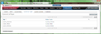
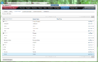
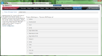
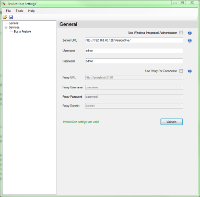
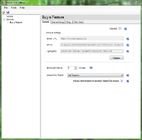
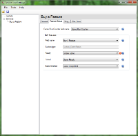
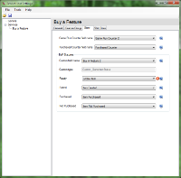

Description
Innovation Games® are a form of primary market research developed by Luke Hohmann where customers play a set of directed games as a means of generating feedback about a product or service. The research is primary because the data collected is gathered directly from customers or prospects and is intended to answer a specific research question. (Secondary research is data collected previously by others, usually through primary research, that may or may not address a specific research question.) "Customers" who play Innovation Games are commonly direct recipients or consumers of a specific product or service. In some cases, though, game players may be any person or system who is or would be affected by a product or service.
Buy A Feature is one of 12 Innovation Games®. It is focused on prioritizing features. Product planners often fall into the trap of thinking that customers have clearly defined product priorities. Some do. Most don't. When presented with a set of options, many customers will simply say "I want them all" and put the responsibility for prioritizing their requests on the shoulders of product planners. Alternatively, product managers often gather feature priorities by working with customers one-on-one and, in the process, and perhaps without even realizing it, again take responsibility for prioritizing features. By engaging customers as a group and giving them a limited amount of resources, the Buy a Feature Innovation Game® gives them the opportunity to prioritize their desires as a group. But that's not where the magic lies. The magic lies in structuring the conversations so that customers are negotiating with each other for specific features. It is this negotiation that enhances understanding of what customers really want. Buy A Feature has been implemented as a Virtual Market Game at Innovation Games Online®, so that product planners can leverage virtual collaboration instead of getting customers into the same room.
The VersionOne Buy A Feature Integration (V1BAF) bootstraps the creation of Buy A Feature Games from items in a VersionOne backlog. After virtual collaboration, Buy A Feature reports the game status and purchase counts back to VersionOne to help in the prioritization process.
Integrated Workflow for End-Users
Integration Service
The integration is an on-premise Windows Service that provides integration for all users of a VersionOne instance. The service is minimal footprint, requiring no more than minimum Windows requirements for CPU, RAM, and Hard Drive. The service can be run on any Windows computer with .NET Framework 2.0, including Windows XP, Vista, or 7, or Windows Server 2003 or 2008. The only storage requirements are the executables, which are less than 2MB, and log files, which default to a maximum of 10MB. Since the integration does not maintain any database or local file store, there is no need for scheduled backups. There is a local configuration file that changes infrequently.
The service can be started and stopped using standard Windows Service Management. Since the integration works on a polling cycle (configured on a scale of minutes), it is simple to schedule maintenance periods for OS or integration updates.
Deployment and Network Communication
System Requirements
- Operating System - Windows 2003, 2008
- Framework - Microsoft .Net 2.0 SP1
- VersionOne - Release 11.1 and above, including Team Edition
- Buy A Feature
Download
The latest version of V1BAF is available from the VersionOne Community site
Installation
- Determine Install Location
V1BAF can be installed on any server with network access to both VersionOne and Buy A Feature. Exact placement should be determined by your internal software management requirements. The integration server must meet the System Requirements stated above.
- Extract Files
Download V1BAF using the link above and extract it into a folder of your choice.
- Configure
Configuration for V1BAF is a 2 step process: - Start Integration
Open up the command prompt, navigate to your installation folder, and run the following command:VersionOne.ServiceHost.exe
If you have configured your system properly, you should see several [Info] messages followed by a [Startup] message.
- Test the integration
To ensure the integration is working, perform the following steps:- Make sure your VersionOne profile includes your email address.
- Create a Theme in VersionOne and assign yourself as owner.
- Create at least 3 Stories in VersionOne and assign them to the Theme.
- Set the Buy a Feature status for the Theme to Create Game and the Buy a Feature status for the Stories to Create Item.
- Login to Buy a Feature (if it is your first time, use the "Forgot Password" option).
- Open the project structure and verify that a new game definition has been created with the name of the Theme from VersionOne.
- Shut down the service host by pressing "Q" in the console window.
- Install as a Windows Service
Run the following command from the console window:VersionOne.ServiceHost.exe --install
This command installs the service so it will will run under the account NT AUTHORITY\Local Service. Local Service must be given access privileges to the directory where the V1BAF executable was installed so it can store its state and write to log files. Follow the steps below to change the security on the installation directory:
- Right click the installation folder from Windows Explorer.
- Select "properties".
- Select the "Security" tab.
- Click the "Add" button.
- Enter "Local Service" and click "OK".
- Click the "Allow" checkbox for the "Full Control" row .
- Click "OK" to save the changes.
Configuration
| Theme=Feature Group A process template is applied to VersionOne during installation. This determines whether you will see Theme or Feature Group. The underlying asset and functionality is the same in VersionOne, regardless of what it is called. For the purpose of this document, we refer to Theme but you should apply the same steps to Feature Group. |
The Innovation Games Online® platform has a narrow window for network time variation. If your host is more than 30s different from Buy-a-Feature, the integration will not be able to connect. Manual configuration of NTP may be required. Run the following on the command line on the computer where the integration is installed:
net stop w32time
w32tm /config /manualpeerlist:pool.ntp.org,0x8 /syncfromflags:MANUAL
net start w32time
Configure VersionOne
You must be logged in as a System Administrator with access to the global level.
- In the Administration Menu, select Configuration.
- Select the Custom List Types tab.
 - Add Buy A Feature Game Status Field for Theme
- Click Add List Type.
- When the new Field window appears, fill in:
Title: Custom_GameStatus
- Add Buy A Feature Game Item Status Field for Backlog Items
- Click Add List Type.
- When the new Field window appears, fill in:
Title: Custom_GameItemStatus
- Add Buy A Feature Shirt Size Field for Backlog Items
- Click Add List Type.
- When the new Field window appears, fill in:
Title: Custom_ShirtSize - Click OK.
- Publish Changes.
- In the Administration Menu, select List Types.
- Select the Custom tab.
- Add list values for Game Status
- For Custom_GameStatus, click the Add button.
- Add the following statuses, clicking OK&New for each:
- Create Game
- Game Ready
- Game Completed
- Add list values for Game Item Status
- For Custom_GameItemStatus, click the Add button.
- Add the following statuses, clicking OK&New for each:
- Create Item
- Item Created
- Item Purchased
- Item Not Purchased
- Add list values for Shirt Size
- For Custom_ShirtSize, click the Add button.
- Add the following statuses, clicking OK&New for each:
- S
- M
- L
- XL
- XXL
- XXXL
- In the Administration Menu, select Configuration.
- Select the Custom Fields tab.
 - Add Buy A Feature Field for Theme
- For Theme, click the Add Dropdown button.
- When the new Dropdown window appears, fill in:
Display Name: Buy A Feature
List Type: Custom_GameStatus - Click OK.
- Add Game Run Counter Field for Theme
- For Theme, click the Add Field button.
- When the new Field window appears, fill in:
Display Name: Game Run Counter
Field Type: Number - Click OK.
- Add Buy A Feature Field for Story
- For Story, click the Add Dropdown button.
- When the new Dropdown window appears, fill in:
Display Name: Buy A Feature
List Type: Custom_GameItemStatus
- Add Shirt Size Field for Story
- For Story, click the Add Dropdown button.
- When the new Dropdown window appears, fill in:
Display Name: Shirt Size
List Type: Custom_ShirtSize
- Add Game Run Counter Field for Story
- For Story, click the Add Field button.
- When the new Field window appears, fill in:
Display Name: Game Run Counter
Field Type: Number - Click OK.
- Add Purchased Counter Field for Story
- For Story, click the Add Field button.
- When the new Field window appears, fill in:
Display Name: Purchased Counter
Field Type: Number - Click OK.
- Publish Changes.
- In the Administration Menu, select Display Fields.
- Select the Project Workspace Assets tab.
 - Open the Theme section.
- Display the Buy A Feature Statuses for Theme.
- For the Buy A Feature Field, select Show Values.
- Enable each of the Status values.
- Display the Game Run Counter for Theme.
- For the Game Run Counter Field, enable display.
- Open the Story section.
- Display the Buy A Feature Statuses for Story.
- For the Buy A Feature Field, select Show Values.
- Enable each of the Status values.
- Display the Shirt Size Values for Story.
- For the Shirt Size Field, select Show Values.
- Enable each of the Shirt Size values.
- Display the Benefit Field for Story.
- For the Benefit Field, enable display.
- Display the Game Run Counter for Story.
- For the Game Run Counter Field, enable display.
- Display the Purchased Counter for Story.
- For the Purchased Counter Field, enable display.
Configure the Integration
To configure V1BAF you need to run the ServiceHost configuration tool
ServiceHostConfigTool.exe
The following section describes how to configure V1BAF using the use the configuration tool
- In the General section specify your VersionOne connection details

The following table describes the fields on this tab
Field Description Server URL This is the URL to your VersionOne server Username VersionOne user that will create defects Password Password for the specified user Use Windows Integrated Authentication Check this box if you VersionOne server is configured to use Windows Integrated Authentication If there's a proxy between this machine and the VersionOne instance, you'll also need to configure the following settings:
Field Description Use Proxy For Connection Determines if the integration tries to connect through a Proxy Proxy URL This is the URL to your Proxy Server Proxy Username The username that will get you past this proxy Proxy Password The password for the Proxy Username Proxy Domain Name of Proxy Domain - Once the VersionOne parameters are specified, press Verify button to continue.
- In the Buy a Feature section, specify the VersionOne project from which V1BAF will pull games.

The following table describes the fields on this tabField Description Disabled Check this box to disable polling for updates. Account Settings The Server URL, API ID, and Signing key are already configured for the public Buy a Feature Online hosted application so these fields are disabled. The Validate button can be used to make sure the host has connectivity to Buy-a-Feature. Poll Interval Determines how frequently the integration polls VersionOne and Buy-a-Feature looking for updates. VersionOne Project The root project from which selected Themes will be converted to Buy-a-Feature games. - On the Feature Group tab specify your custom fields.

The following table describes the fields on this tabField Description Game Run Counter field name If you followed the instructions above for creating fields, select "Game Run Counter". If not, you should select an appropriate field from the drop-down. These are limited to fields available for Theme that are type "Number". Buy-a-Feature Statuses If you followed the instructions above for creating fields, select "Buy a Feature". If not, you should select an appropriate field from the drop-down. These are limited to fields available for Theme that are list types. Ready If you followed the instructions above for creating fields, select "Create Game". If not, you should select an appropriate status from the drop-down. These are limited to statuses available on the selected list type. Each status can only be used once. Ported If you followed the instructions above for creating fields, select "Game Ready". If not, you should select an appropriate status from the drop-down. These are limited to statuses available on the selected list type. Each status can only be used once. Game finished If you followed the instructions above for creating fields, select "Game Completed". If not, you should select an appropriate status from the drop-down. These are limited to statuses available on the selected list type. Each status can only be used once. - On the Story tab specify your custom fields.

The following table describes the fields on this tabField Description Game Run Counter field name If you followed the instructions above for creating fields, select "Game Run Counter 2". If not, you should select an appropriate field from the drop-down. These are limited to fields available for Story that are type "Number". Buy-a-Feature Statuses If you followed the instructions above for creating fields, select "Buy a Feature". If not, you should select an appropriate field from the drop-down. These are limited to fields available for Theme that are list types. Ready If you followed the instructions above for creating fields, select "Create Game". If not, you should select an appropriate status from the drop-down. These are limited to statuses available on the selected list type. Each status can only be used once. Ported If you followed the instructions above for creating fields, select "Game Ready". If not, you should select an appropriate status from the drop-down. These are limited to statuses available on the selected list type. Each status can only be used once. Game finished If you followed the instructions above for creating fields, select "Game Completed". If not, you should select an appropriate status from the drop-down. These are limited to statuses available on the selected list type. Each status can only be used once. - On the Shirt Sizes tab specify your shirt size mapping.
The following table describes the fields on this tabField Description VersionOne T-Shirt Size field If you followed the instructions above for creating fields, select "Shirt Size". If not, you should select an appropriate field from the drop-down. These are limited to fields available for Story that are list types. Shirt Size mappings If you followed the instructions above for creating fields, select the matching size on the left for each size on the right. If not, you can map the sizes as makes sense for your selected Shirt Size field.

{kind=link}
{kind=link}
{kind=link}
{kind=link}
{kind=link}
{kind=link}
{kind=link}
{kind=link}
{kind=link}